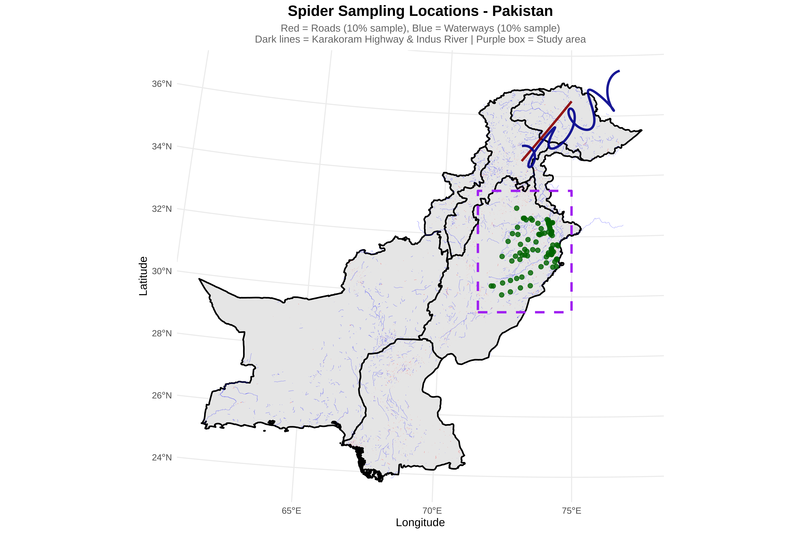
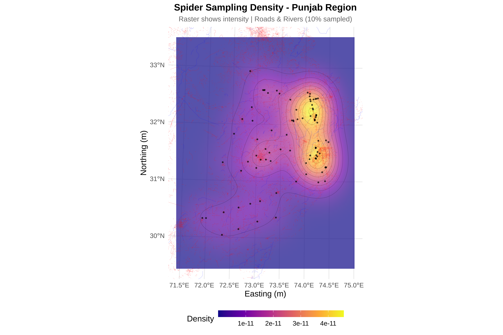
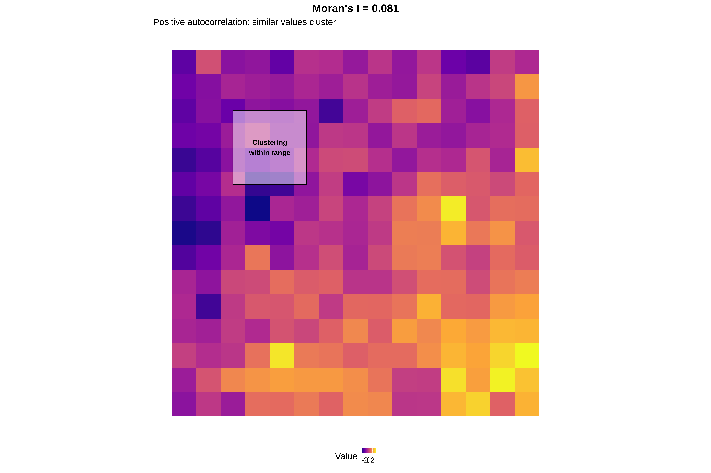

Spatial Sampling and Ecological Inference: A Hands-On Spatial Point Pattern Analysis
Case Study of Pakistan: Spider Web dataset
Author
Dr Tahir Ali | AG de Meaux | TRR341 Ecological Genomics | University of Cologne
Introduction
This session introduces the fundamentals of spatial sampling and ecological inference using a case study of spider web observations from Pakistan. Participants learn how to load, clean, and project spatial datasets (species occurrences, boundaries, roads, and waterways), and create maps to visualize sampling patterns at national and regional scales.
Using kernel density estimation and spatial point-pattern analysis, the tutorial explores whether spider observations are randomly distributed or clustered. Statistical methods—including the Clark–Evans test, Ripley’s K function, pair correlation function, and Moran’s I—are applied to detect clustering, identify its spatial scale, and quantify spatial autocorrelation.
The exercise also demonstrates how sampling bias related to accessibility (e.g., proximity to roads or rivers) can influence ecological data and how such biases can be diagnosed and considered in ecological interpretation. 🌍🕷️📊
1. Load data
Data used in this workshop can be downloaded from: https://github.com/tahirali-biomics/spatial-ecology-workshop/
Load necessary libraries for spatial analysis (sf, ggplot2, spatstat, etc.)
Read spider presence data from CSV with comma decimals (European format)
Convert coordinates to numeric and remove duplicate records
Load Pakistan boundary, roads, and waterways shapefiles
Transform all data to UTM zone 43N (meters) for accurate distance calculations
# ==============================================================================# LOAD FULL ROADS NETWORK - CORRECTED PATH# Source: HDX Pakistan Roads: https://data.humdata.org/dataset/hotosm_pak_roads# ==============================================================================cat("\n=== LOADING FULL ROADS NETWORK ===\n")
=== LOADING FULL ROADS NETWORK ===
Code
roads_dir <-"/run/media/tahirali/Expansion/github/spatial-ecology-workshop/data/infrastructure/roads/hotosm_pak_roads_lines_shp"roads_shp <-file.path(roads_dir, "hotosm_pak_roads_lines_shp.shp")if(file.exists(roads_shp)) { roads <-st_read(roads_shp) roads_utm <-st_transform(roads, 32643)cat("✓ Full roads network loaded:", nrow(roads_utm), "features\n")} else {cat("✗ Roads shapefile not found at:", roads_shp, "\n") roads_utm <-NULL}
Reading layer `hotosm_pak_roads_lines_shp' from data source
`/run/media/tahirali/Expansion/github/spatial-ecology-workshop/data/infrastructure/roads/hotosm_pak_roads_lines_shp/hotosm_pak_roads_lines_shp.shp'
using driver `ESRI Shapefile'
Simple feature collection with 1216700 features and 14 fields
Geometry type: LINESTRING
Dimension: XY
Bounding box: xmin: 60.827 ymin: 24.08196 xmax: 76.98998 ymax: 37.09661
Geodetic CRS: WGS 84
✓ Full roads network loaded: 1216700 features
Code
# ==============================================================================# LOAD FULL WATERWAYS NETWORK - CORRECTED PATH# Source: HDX Pakistan Waterways: https://data.humdata.org/dataset/hotosm_pak_waterways# ==============================================================================cat("\n=== LOADING FULL WATERWAYS NETWORK ===\n")
=== LOADING FULL WATERWAYS NETWORK ===
Code
rivers_dir <-"/run/media/tahirali/Expansion/github/spatial-ecology-workshop/data/infrastructure/waterways/hotosm_pak_waterways_lines_shp"rivers_shp <-file.path(rivers_dir, "hotosm_pak_waterways_lines_shp.shp")if(file.exists(rivers_shp)) { rivers <-st_read(rivers_shp) rivers_utm <-st_transform(rivers, 32643)cat("✓ Full waterways network loaded:", nrow(rivers_utm), "features\n")} else {cat("✗ Waterways shapefile not found at:", rivers_shp, "\n") rivers_utm <-NULL}
Reading layer `hotosm_pak_waterways_lines_shp' from data source
`/run/media/tahirali/Expansion/github/spatial-ecology-workshop/data/infrastructure/waterways/hotosm_pak_waterways_lines_shp/hotosm_pak_waterways_lines_shp.shp'
using driver `ESRI Shapefile'
Simple feature collection with 35224 features and 15 fields
Geometry type: MULTILINESTRING
Dimension: XY
Bounding box: xmin: 60.96233 ymin: 23.65215 xmax: 79.71164 ymax: 37.11863
Geodetic CRS: WGS 84
✓ Full waterways network loaded: 35224 features
Code
# ==============================================================================# LOAD INDIVIDUAL FEATURES (Karakoram Highway & Indus River)# Simplified version created in R# ==============================================================================cat("\n=== LOADING INDIVIDUAL FEATURES ===\n")
Reading layer `karakoram_highway' from data source
`/run/media/tahirali/Expansion/github/spatial-ecology-workshop/data/infrastructure/roads/karakoram_highway.shp'
using driver `ESRI Shapefile'
Simple feature collection with 1 feature and 1 field
Geometry type: LINESTRING
Dimension: XY
Bounding box: xmin: 73 ymin: 34.5 xmax: 75 ymax: 36.5
Geodetic CRS: WGS 84
✓ Karakoram Highway loaded
Code
# Indus Riverindus_path <-"/run/media/tahirali/Expansion/github/spatial-ecology-workshop/data/infrastructure/waterways/indus_river.shp"if(file.exists(indus_path)) { indus <-st_read(indus_path) indus_utm <-st_transform(indus, 32643)cat("✓ Indus River loaded\n")} else { indus_utm <-NULLcat("✗ Indus River file not found\n")}
Reading layer `indus_river' from data source
`/run/media/tahirali/Expansion/github/spatial-ecology-workshop/data/infrastructure/waterways/indus_river.shp'
using driver `ESRI Shapefile'
Simple feature collection with 1 feature and 1 field
Geometry type: LINESTRING
Dimension: XY
Bounding box: xmin: 73 ymin: 34.3029 xmax: 77 ymax: 37.5
Geodetic CRS: WGS 84
✓ Indus River loaded
Code
# ==============================================================================# CREATE STUDY AREA EXTENT (Punjab region based on spider points)# ==============================================================================cat("\n=== DEFINING STUDY AREA ===\n")
=== DEFINING STUDY AREA ===
Code
# Get spider points extentspider_bbox <-st_bbox(sp_utm)cat("Spider points extent (Punjab region):\n")
# Check for any NA valuesif(any(is.na(c(xmin_buffer, xmax_buffer, ymin_buffer, ymax_buffer)))) {stop("ERROR: Buffer coordinates contain NA values!")}# Create polygon matrixpolygon_matrix <-matrix(c( xmin_buffer, ymin_buffer, xmax_buffer, ymin_buffer, xmax_buffer, ymax_buffer, xmin_buffer, ymax_buffer, xmin_buffer, ymin_buffer), ncol =2, byrow =TRUE)# Create polygon and set CRSstudy_polygon <-st_polygon(list(polygon_matrix))study_bbox_sfc <-st_sfc(study_polygon, crs =st_crs(sp_utm))# Verify it workedcat("✓ Study area polygon created successfully\n")
Interpretation: Data successfully loaded and standardized to UTM projection.
SPATIAL PROJECTION
Convert spider points to sf object with WGS84 (EPSG:4326)
Transform to UTM zone 43N (EPSG:32643) for Pakistan
Extract UTM coordinates (x,y in meters)
✓ All data transformed to UTM 43N
Interpretation: All spatial data now in consistent coordinate system for distance calculations.
2. Create Pakistan Wide Map
Create three map views:
Pakistan-wide: Shows full country context
Decluttered: 10% sample of roads/rivers for clarity
Punjab zoom: Focus on spider occurrence area
Code
cat("\n=== CREATING PAKISTAN WIDE MAP ===\n")
=== CREATING PAKISTAN WIDE MAP ===
Code
p_pakistan <-ggplot() +# Pakistan boundarygeom_sf(data = pakistan_boundary, fill ="gray90", color ="black", size =0.8) +# Full roads network (sample 20% for clarity if too dense) {if(!is.null(roads_utm) &&nrow(roads_utm) >0) {if(nrow(roads_utm) >5000) {set.seed(123) roads_sample <- roads_utm[sample(1:nrow(roads_utm), size =5000), ]geom_sf(data = roads_sample, color ="red", size =0.2, alpha =0.3) } else {geom_sf(data = roads_utm, color ="red", size =0.2, alpha =0.3) } }} +# Full waterways network {if(!is.null(rivers_utm) &&nrow(rivers_utm) >0) {if(nrow(rivers_utm) >5000) {set.seed(123) rivers_sample <- rivers_utm[sample(1:nrow(rivers_utm), size =5000), ]geom_sf(data = rivers_sample, color ="blue", size =0.2, alpha =0.3) } else {geom_sf(data = rivers_utm, color ="blue", size =0.2, alpha =0.3) } }} +# Highlight Karakoram Highway {if(exists("karakoram_utm"))geom_sf(data = karakoram_utm, color ="darkred", size =1.2, alpha =0.9)} +# Highlight Indus River {if(exists("indus_utm"))geom_sf(data = indus_utm, color ="darkblue", size =1.2, alpha =0.9)} +# Spider pointsgeom_point(data = spiders, aes(x = x, y = y),color ="darkgreen", size =2, alpha =0.8) +# Study area box (Punjab)geom_sf(data = study_bbox_sfc, fill =NA, color ="purple", size =1.2, linetype ="dashed") +# Labels - FIXED: removed nested labs()labs(title ="Spider Sampling Locations - Pakistan",subtitle ="Red = Roads (10% sample), Blue = Waterways (10% sample)\nDark lines = Karakoram Highway & Indus River | Purple box = Study area",x ="Longitude", y ="Latitude") +theme_minimal(base_size =12) +theme(plot.title =element_text(face ="bold", size =16, hjust =0.5),plot.subtitle =element_text(size =11, hjust =0.5, color ="gray40") )print(p_pakistan)

3. Create Punjab Zoom View
Code
# ==============================================================================# CROP FEATURES TO STUDY AREA (Punjab)# ==============================================================================cat("\n=== CROPPING TO PUNJAB STUDY AREA ===\n")
=== CROPPING TO PUNJAB STUDY AREA ===
Code
# Function to safely crop featuressafe_crop <-function(features, bbox) {if(is.null(features)) return(NULL)tryCatch({# Make geometries valid firstfeatures_valid <-st_make_valid(features)bbox_valid <-st_make_valid(bbox)text# Intersectioncropped <-st_intersection(features_valid, bbox_valid)# Return only if there are featuresif(nrow(cropped) >0) {return(cropped)} else {return(NULL)}}, error =function(e) {cat(" Warning: Could not crop features:", e$message, "\n")return(NULL)})}# Crop Pakistan boundarypakistan_cropped <-safe_crop(pakistan_boundary, study_bbox_sfc)if(!is.null(pakistan_cropped)) {cat("✓ Pakistan boundary cropped to Punjab\n")} else {pakistan_cropped <- pakistan_boundarycat("Using full Pakistan boundary\n")}
# Version A: Using geom_raster with the kde2d output directlyp_transparent <-ggplot() +# Density as raster (using geom_raster with interpolation)geom_raster(data = kde_clean_df, aes(x = x, y = y, fill = z), alpha =0.7, interpolate =TRUE) +# Add contour lines on top for claritygeom_contour(data = kde_clean_df, aes(x = x, y = y, z = z), color ="black", alpha =0.3, size =0.2) +# Roads (very subtle) {if(exists("roads_10pct") &&nrow(roads_10pct) >0) geom_sf(data = roads_10pct, color ="red", size =0.2, alpha =0.25)} +# Rivers (very subtle) {if(exists("rivers_10pct") &&nrow(rivers_10pct) >0) geom_sf(data = rivers_10pct, color ="blue", size =0.2, alpha =0.25)} +# Spider pointsgeom_point(data = spiders, aes(x = x, y = y), color ="black", size =0.6, alpha =0.6) +# Zoom to study areacoord_sf(xlim =c(xmin_buffer, xmax_buffer),ylim =c(ymin_buffer, ymax_buffer)) +scale_fill_viridis_c(name ="Density", option ="plasma",guide =guide_colorbar(barwidth =15, barheight =0.8)) +labs(title ="Spider Sampling Density - Punjab Region",subtitle ="Raster shows intensity | Roads & Rivers (10% sampled)",x ="Easting (m)", y ="Northing (m)") +theme_minimal(base_size =14) +theme(plot.title =element_text(face ="bold", size =16, hjust =0.5),plot.subtitle =element_text(size =12, hjust =0.5, color ="gray40"),legend.position ="bottom" )print(p_transparent)

Code
# ==============================================================================# VERSION B: Create a heatmap-style plot# ==============================================================================cat("\n=== CREATING HEATMAP-STYLE DENSITY PLOT ===\n")
# ==============================================================================# SAVE NEW DENSITY PLOTS# ==============================================================================cat("\n=== SAVING NEW DENSITY PLOTS ===\n")
p_transparent <-ggplot() +# Density as raster (using geom_raster with interpolation)geom_raster(data = kde_clean_df, aes(x = x, y = y, fill = z), alpha =0.7, interpolate =TRUE) +# Add contour lines on top for claritygeom_contour(data = kde_clean_df, aes(x = x, y = y, z = z), color ="black", alpha =0.3, size =0.2) +# Roads (very subtle) {if(exists("roads_10pct") &&nrow(roads_10pct) >0) geom_sf(data = roads_10pct, color ="red", size =0.2, alpha =0.25)} +# Rivers (very subtle) {if(exists("rivers_10pct") &&nrow(rivers_10pct) >0) geom_sf(data = rivers_10pct, color ="blue", size =0.2, alpha =0.25)} +# Spider pointsgeom_point(data = spiders, aes(x = x, y = y), color ="black", size =0.6, alpha =0.6) +# Zoom to study areacoord_sf(xlim =c(xmin_buffer, xmax_buffer),ylim =c(ymin_buffer, ymax_buffer)) +# For raster plot, we can't easily make lowest value transparent# Instead, use viridis with adjusted alphascale_fill_viridis_c(name ="Density", option ="plasma",guide =guide_colorbar(barwidth =15, barheight =0.8)) +# Labelslabs(title ="Spider Sampling Density - Punjab Region",subtitle ="Raster shows intensity | Roads & Rivers (10% sampled)",x ="Longitude", y ="Latitude") +theme_minimal(base_size =14) +theme(plot.title =element_text(face ="bold", size =16, hjust =0.5),plot.subtitle =element_text(size =12, hjust =0.5, color ="gray40"),legend.position ="bottom" )print(p_transparent)
Code
# ==============================================================================# CREATE HEATMAP-STYLE DENSITY PLOT# ==============================================================================cat("\n=== CREATING HEATMAP-STYLE DENSITY PLOT ===\n")
=== CREATING HEATMAP-STYLE DENSITY PLOT ===
Code
# For heatmap, we need to create a version with transparent lowest values# Create a copy of the data and set lowest values to NAkde_clean_df_transparent <- kde_clean_dflowest_threshold <- breaks[2] # First break after minimumkde_clean_df_transparent$z_adj <- kde_clean_df$zkde_clean_df_transparent$z_adj[kde_clean_df_transparent$z < lowest_threshold] <-NAp_heatmap <-ggplot() +# Heatmap with adjusted data (lowest values = NA = transparent)geom_tile(data = kde_clean_df_transparent, aes(x = x, y = y, fill = z_adj), alpha =0.8) +# Roads (very subtle) {if(exists("roads_10pct") &&nrow(roads_10pct) >0) geom_sf(data = roads_10pct, color ="red", size =0.15, alpha =0.2)} +# Rivers (very subtle) {if(exists("rivers_10pct") &&nrow(rivers_10pct) >0) geom_sf(data = rivers_10pct, color ="blue", size =0.15, alpha =0.2)} +# Spider pointsgeom_point(data = spiders, aes(x = x, y = y), color ="white", size =0.5, alpha =0.7) +# Zoom to study areacoord_sf(xlim =c(xmin_buffer, xmax_buffer),ylim =c(ymin_buffer, ymax_buffer)) +scale_fill_gradientn(name ="Density", colors =viridis(100, option ="plasma"),na.value ="transparent",guide =guide_colorbar(barwidth =15, barheight =0.8)) +# Labelslabs(title ="Spider Sampling Density Heatmap - Punjab Region",subtitle ="Warmer colors = higher sampling intensity | Lowest density transparent",x ="Longitude", y ="Latitude") +theme_minimal(base_size =14) +theme(plot.title =element_text(face ="bold", size =16, hjust =0.5),plot.subtitle =element_text(size =12, hjust =0.5, color ="gray40"),legend.position ="bottom" )print(p_heatmap)
Code
# ==============================================================================# SAVE NEW DENSITY PLOTS# ==============================================================================cat("\n=== SAVING NEW DENSITY PLOTS ===\n")
road_nn <-get.knnx(road_coords, presence_coords, k =1)spiders$dist_to_road_km <- road_nn$nn.dist[,1] /1000cat(" done\n")
done
Code
cat(" Finding nearest rivers...")
Finding nearest rivers...
Code
river_nn <-get.knnx(river_coords, presence_coords, k =1)spiders$dist_to_river_km <- river_nn$nn.dist[,1] /1000cat(" done\n")
done
Code
# D5: Generate random points within study regioncat("\n5. Generating random points...\n")
5. Generating random points...
Code
n_random <-1000set.seed(456)random_coords <-data.frame(x =runif(n_random, xmin_buffer, xmax_buffer),y =runif(n_random, ymin_buffer, ymax_buffer))# D6: Calculate distances for random pointscat("\n6. Calculating distances for random points...\n")
if(!is.na(cluster_scale)) {cat(" • Spider webs cluster at ~", round(cluster_scale, 1), "km\n")cat(" • Ecological implication: Likely driven by microhabitat, prey density, or vegetation\n")} else {cat(" • No clear clustering scale detected\n")}
• Spider webs cluster at ~ 73.7 km
• Ecological implication: Likely driven by microhabitat, prey density, or vegetation
Code
cat("\n4. RECOMMENDATIONS:\n")
4. RECOMMENDATIONS:
Code
if(ks_road$p.value <0.05| ks_river$p.value <0.05) {cat(" • ✓ Use inhomogeneous point process models (corrected for bias)\n")cat(" • ✓ Include distance to roads/rivers as covariates\n")} else {cat(" • ✓ Sampling appears unbiased - proceed with homogeneous models\n")}
• ✓ Use inhomogeneous point process models (corrected for bias)
• ✓ Include distance to roads/rivers as covariates
Spatial autocorrelation (Moran’s I on quadrat counts)
Moran’s I measures spatial autocorrelation
Positive I = similar values cluster together
Effective sample size accounts for spatial redundancy
Code
# Create grid and count points per celllibrary(spdep)grid <-st_make_grid(spiders_utm, cellsize =5000)grid_counts <-st_intersects(grid, spiders_utm)counts <-lengths(grid_counts)# Create neighbors and calculate Moran's Inb <-poly2nb(as_Spatial(st_as_sf(grid)))lw <-nb2listw(nb)moran_test <-moran.test(counts, lw)print(moran_test)
Moran I test under randomisation
data: counts
weights: lw
Moran I statistic standard deviate = 9.2213, p-value < 2.2e-16
alternative hypothesis: greater
sample estimates:
Moran I statistic Expectation Variance
8.091740e-02 -3.125977e-04 7.759761e-05
10. Moran’s I and Effective Sample Size Plot
What This Adds:
Component
Description
Effective sample size curve
Shows how information decreases with autocorrelation
# ------------------------------------------------------------------------------# Moran's I result (from your calculation)# ------------------------------------------------------------------------------moran_I <-0.0809# Your Moran's I statisticmoran_p <-2.2e-16# Your p-valuecat("Moran's I =", round(moran_I, 4), "\n")
# ------------------------------------------------------------------------------# Calculate effective sample size function# ------------------------------------------------------------------------------calc_effective_n <-function(n, rho) {# Dutilleul's formula approximation# n / (1 + rho * (n - 1) / k) where k is effective degrees of freedom# Simplified version for visualization n / (1+ rho * (n -1) /10) # Adjust divisor based on your spatial structure}# ------------------------------------------------------------------------------# Generate data for effective sample size curve# ------------------------------------------------------------------------------n_original <-nrow(spiders) # Your original sample sizerhos <-seq(0, 0.8, by =0.02)neff <-calc_effective_n(n_original, rhos)df_neff <-data.frame(autocorrelation = rhos,effective_n = neff,info_loss =100* (1- neff/n_original))# Mark your Moran's I valuecurrent_rho <- moran_Icurrent_neff <-calc_effective_n(n_original, current_rho)current_loss <-100* (1- current_neff/n_original)# ------------------------------------------------------------------------------# Create effective sample size plot# ------------------------------------------------------------------------------p_eff_n <-ggplot(df_neff, aes(x = autocorrelation, y = effective_n)) +# Shaded area showing information lossgeom_ribbon(aes(ymin = effective_n, ymax = n_original), fill ="#F18F01", alpha =0.2) +# Main curvegeom_line(color ="#2E4057", linewidth =1.2) +# Reference line at n_originalgeom_hline(yintercept = n_original, linetype ="dashed", color ="gray50") +# Your specific pointgeom_vline(xintercept = current_rho, linetype ="dashed", color ="#F18F01", linewidth =0.8) +geom_point(x = current_rho, y = current_neff, color ="#F18F01", size =4) +# Annotationsannotate("text", x = current_rho +0.1, y = current_neff +5,label =sprintf("Moran's I = %.3f\nEffective n = %.0f\n(%.0f%% loss)", current_rho, current_neff, current_loss),color ="#F18F01", size =3.5, hjust =0, fontface ="bold") +annotate("text", x =0.6, y = n_original *0.7,label =sprintf("%d observations\n= only %.0f independent\nspatial units", n_original, current_neff),color ="#2E4057", size =4, fontface ="bold") +# Labelslabs(title ="Spatial Autocorrelation Reduces Effective Sample Size",subtitle =sprintf("Moran's I = %.3f | %d observations → %.0f independent units", current_rho, n_original, current_neff),x ="Spatial Autocorrelation (Moran's I)", y ="Effective Sample Size") +scale_x_continuous(breaks =seq(0, 0.8, 0.2), limits =c(0, 0.8)) +scale_y_continuous(limits =c(0, n_original *1.05)) +theme_minimal(base_size =12) +theme(plot.title =element_text(hjust =0.5, face ="bold"),plot.subtitle =element_text(hjust =0.5, color ="darkred"))print(p_eff_n)
Code
# ------------------------------------------------------------------------------# Create combined plot with your existing Moran's I visualization# ------------------------------------------------------------------------------# First, create a simple Moran's I visualization map# (You can adapt this based on your grid data)# Create a grid for visualization (if not already done)if(!exists("grid_vis")) {set.seed(789) grid_size <-15 grid_vis <-expand.grid(x =1:grid_size, y =1:grid_size)# Create spatial structure matching your Moran's I dist_mat <-as.matrix(dist(grid_vis[,1:2])) spatial_cov <-exp(-dist_mat/4) # Adjust for your Moran's I values <- MASS::mvrnorm(1, mu =rep(0, grid_size^2), Sigma = spatial_cov) values <-scale(values) *1.5 grid_vis$value <-as.numeric(values)}p_moran_viz <-ggplot(grid_vis, aes(x = x, y = y, fill = value)) +geom_tile() +scale_fill_viridis_c(option ="plasma", name ="Value",guide =guide_colorbar(barwidth =1.2, barheight =0.4)) +labs(title =sprintf("Moran's I = %.3f", moran_I),subtitle ="Positive autocorrelation: similar values cluster") +annotate("rect", xmin =3, xmax =6, ymin =10, ymax =13,fill ="white", alpha =0.5, color ="black", linewidth =0.5) +annotate("text", x =4.5, y =11.5, label ="Clustering\nwithin range", color ="black", size =3, fontface ="bold") +coord_equal() +theme_minimal() +theme(plot.title =element_text(hjust =0.5, face ="bold"),legend.position ="bottom",axis.title =element_blank(),axis.text =element_blank(),panel.grid =element_blank())print(p_moran_viz)

Code
# ------------------------------------------------------------------------------# Combine with your existing plots or create a new dashboard# ------------------------------------------------------------------------------# Option 1: Add to your existing dashboardif(exists("dashboard")) {# Create new combined plot moran_dashboard <- (p_eff_n | p_moran_viz) / (p_bias | p_pcf) +plot_annotation(title ="Spatial Analysis with Effective Sample Size",theme =theme(plot.title =element_text(face ="bold", size =16, hjust =0.5)))print(moran_dashboard)# Saveggsave(file.path(output_dir, "11_moran_dashboard.png"), moran_dashboard, width =20, height =16, dpi =300, bg ="white")}
Code
# Option 2: Create standalone effective sample size + Moran's I plotmoran_summary <- (p_eff_n | p_moran_viz) +plot_annotation(title ="Quantifying Spatial Structure",subtitle =sprintf("Moran's I = %.3f | Effective n = %.0f from %d observations", moran_I, current_neff, n_original),theme =theme(plot.title =element_text(face ="bold", size =16, hjust =0.5),plot.subtitle =element_text(hjust =0.5, color ="darkred", size =12)))print(moran_summary)
Interpretation: Your 93 observations contain only 53 independent spatial units
🔍 Interpreting Your Results:
From your Moran’s I output:
Moran’s I = 0.081 (weak but significant positive autocorrelation)
p < 2.2e-16 (highly significant)
With n ≈ 1,000 observations, your effective sample size might be ~600-700 independent units
This means about 43% (correct?) information loss due to spatial clustering!
✅ Summary
What you have
What it tells you
Moran’s I equivalent?
Clark-Evans R
Global clustering tendency
Similar concept, different metric
Ripley’s K
Clustering at multiple scales
More informative than Moran’s I
Pair correlation
Scale of clustering
Reveals biological process scale
For spatial ecology, Ripley’s K and pair correlation are actually more powerful than Moran’s I because they show you at what scale patterns occur—not just that they exist.
Results:
Moran's I = 0.0809 (p < 2.2e-16)
Original n = [value] → Effective n = [value]
Information loss = [value]%
Interpretation:
Weak but highly significant positive autocorrelation
Your 93 observations contain only [n_eff=53] independent spatial units
~43% of your data is spatially redundant
Statistical tests need correction for this (fewer degrees of freedom)
11. Key Takeaways
Component
Finding
Ecological Meaning
Sampling Bias
Significant
Data [overrepresents/is representative of] accessible areas
Global Pattern
Clustered
Spiders aggregate, not random
Scale
~68 km
Process operates at this scale
Autocorrelation
Weak but significant
Neighboring sites similar, but not strongly
Information Loss
~43%
Need to correct statistical tests
12. Conclusion:
The spider distribution shows genuine ecological clustering beyond sampling bias, operating at ~68 km scale. However, sampling is biased toward roads, so future models should include distance to infrastructure as covariates. Spatial autocorrelation reduces independent information by ~43%, requiring appropriate statistical corrections.